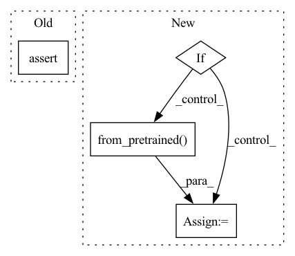

Pattern ID :11658
Before Change
ner_taskmodule = TransformerSpanClassificationTaskModule.from_pretrained(model_name_or_path)
assert ner_taskmodule.is_from_pretrained
ner_model = TransformerSpanClassificationModel.from_pretrained(model_name_or_path)
assert ner_model.is_from_pretrained
ner_pipeline = Pipeline(
model=ner_model, taskmodule=ner_taskmodule, device=-1, fast_dev_run=fast_dev_runAfter Change
@pytest.mark.parametrize("use_auto", [False, True])
def test_ner_span_classification(fast_dev_run, use_auto):
model_name_or_path = "pie/example-ner-spanclf-conll03"
if use_auto:
ner_pipeline = AutoPipeline.from_pretrained(
model_name_or_path, device=-1, fast_dev_run=fast_dev_run
)
else:
ner_taskmodule = TransformerSpanClassificationTaskModule.from_pretrained(
model_name_or_path
)In pattern: SUPERPATTERN
Frequency: 3
Non-data size: 4
Instances Fragment ID: 39492843
Project Name: christophalt/pytorch-ie
Commit Name: 294ba7515621f910f5084d1d367769c9881adf93
Time: 2023-03-03
Author: ArneBinder@users.noreply.github.com
File Name: tests/pipeline/test_ner_span_classification.py
M Class Name: AnonimousClass
N Class Name: AnonimousClass
M Method Name: test_ner_span_classification(2)
N Method Name: test_ner_span_classification(1)
M Parent Class:
N Parent Class:
M File Name: tests/pipeline/test_ner_span_classification.py
N File Name: tests/pipeline/test_ner_span_classification.py
M Start Line: 22
M End Line: 29
N Start Line: 22
N End Line: 37
Before Change
return config["model"], config["tokenizer"]
def get_encoded_dim(name):
assert name in T5_CONFIGS, f"{name} model is not found in configuration"
return T5_CONFIGS[name]["dim"]
// encoding textAfter Change
return T5_CONFIGS[name]["model"], T5_CONFIGS[name]["tokenizer"]
def get_encoded_dim(name):
if name not in T5_CONFIGS:
// avoids loading the model if we only want to get the dim
config = T5Config.from_pretrained( name)
T5_CONFIGS[name] = dict(config=config)
elif "config" in T5_CONFIGS:
config = T5_CONFIGS[name]["config"]
elif "model" in T5_CONFIGS: Fragment ID: 39492844
Project Name: lucidrains/imagen-pytorch
Commit Name: 6d857854c25312dad6d379bb19d5b7e9fe0ccf68
Time: 2022-05-26
Author: jorgemcgomes@gmail.com
File Name: imagen_pytorch/t5.py
M Class Name: AnonimousClass
N Class Name: AnonimousClass
M Method Name: get_encoded_dim(1)
N Method Name: get_encoded_dim(1)
M Parent Class:
N Parent Class:
M File Name: imagen_pytorch/t5.py
N File Name: imagen_pytorch/t5.py
M Start Line: 82
M End Line: 83
N Start Line: 38
N End Line: 48
Before Change
re_taskmodule = TransformerRETextClassificationTaskModule.from_pretrained(model_name_or_path)
assert re_taskmodule.is_from_pretrained
re_model = TransformerTextClassificationModel.from_pretrained(model_name_or_path)
assert re_model.is_from_pretrained
pipeline = Pipeline(model=re_model, taskmodule=re_taskmodule, device=-1)
After Change
@pytest.mark.parametrize("use_auto", [False, True])
def test_re_text_classification(use_auto):
model_name_or_path = "pie/example-re-textclf-tacred"
if use_auto:
pipeline = AutoPipeline.from_pretrained( model_name_or_path)
else:
re_taskmodule = TransformerRETextClassificationTaskModule.from_pretrained(
model_name_or_path
) Fragment ID: 39492845
Project Name: christophalt/pytorch-ie
Commit Name: 294ba7515621f910f5084d1d367769c9881adf93
Time: 2023-03-03
Author: ArneBinder@users.noreply.github.com
File Name: tests/pipeline/test_re_text_classification.py
M Class Name: AnonimousClass
N Class Name: AnonimousClass
M Method Name: test_re_text_classification(1)
N Method Name: test_re_text_classification(0)
M Parent Class:
N Parent Class:
M File Name: tests/pipeline/test_re_text_classification.py
N File Name: tests/pipeline/test_re_text_classification.py
M Start Line: 23
M End Line: 28
N Start Line: 23
N End Line: 34